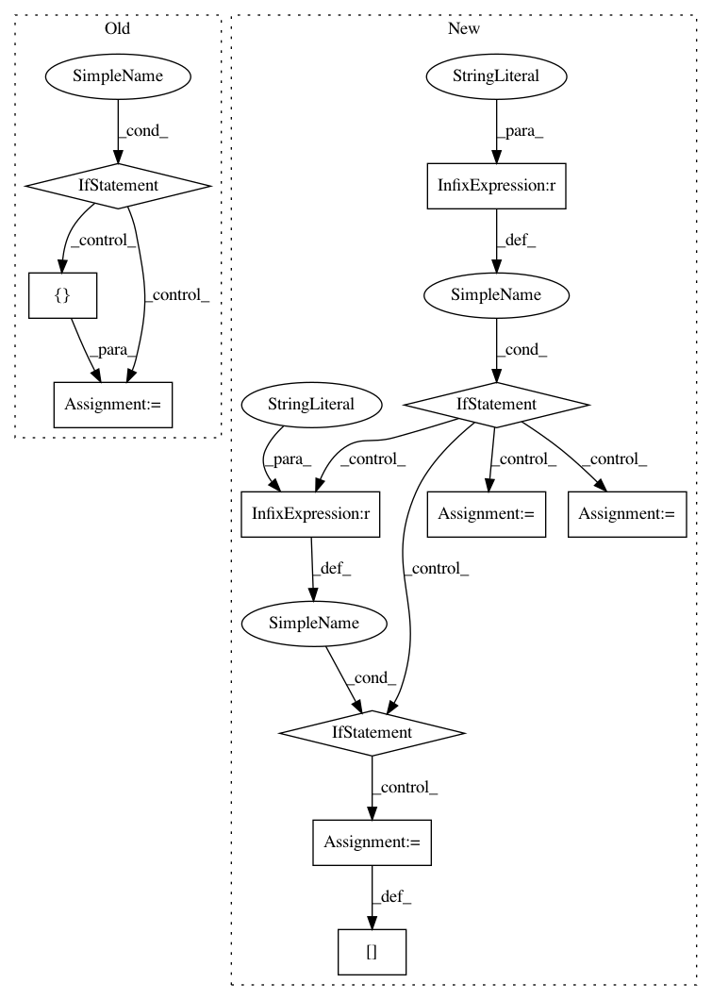

35999e65a83c8b9f67b833623a5b9ce47af7cc71,luminoth/utils/training.py,,get_learning_rate,#Any#Any#,16
Before Change
if method not in LEARNING_RATE_DECAY_METHODS:
raise ValueError("Invalid learning_rate method "{}"".format(method))
if method == "piecewise_constant":
learning_rate = tf.train.piecewise_constant(
global_step, boundaries=[
tf.cast(train_config.learning_rate_decay, tf.int64), ],
values=[
train_config.initial_learning_rate,
train_config.initial_learning_rate * 0.1
], name="learning_rate_piecewise_constant"
)
elif method == "exponential_decay":
learning_rate = tf.train.exponential_decay(
learning_rate=train_config.initial_learning_rate,
global_step=global_step,
decay_steps=train_config.learning_rate_decay, decay_rate=0.96,
staircase=True, name="learning_rate_with_decay"
)
tf.summary.scalar("losses/learning_rate", learning_rate)
return learning_rate
After Change
lr_config = train_config.learning_rate.copy()
decay_method = lr_config.pop("decay_method", None)
if not decay_method or decay_method == "none":
return lr_config.get("value") or lr_config.get("learning_rate")
if decay_method not in LEARNING_RATE_DECAY_METHODS:
raise ValueError("Invalid learning_rate method "{}"".format(
decay_method
))
if decay_method == "piecewise_constant":
lr_config["x"] = global_step
else:
lr_config["global_step"] = global_step
// boundaries, when used, must be the same type as global_step (int64).
if "boundaries" in lr_config:
lr_config["boundaries"] = [
tf.cast(b, tf.int64) for b in lr_config["boundaries"]
]
decay_function = LEARNING_RATE_DECAY_METHODS[decay_method]
learning_rate = decay_function(
**lr_config
)
// if decay_method == "piecewise_constant":
// learning_rate = tf.train.piecewise_constant(
// global_step, boundaries=[
In pattern: SUPERPATTERN
Frequency: 3
Non-data size: 11
Instances
Project Name: tryolabs/luminoth
Commit Name: 35999e65a83c8b9f67b833623a5b9ce47af7cc71
Time: 2017-09-19
Author: javirey@gmail.com
File Name: luminoth/utils/training.py
Class Name:
Method Name: get_learning_rate
Project Name: dmlc/gluon-cv
Commit Name: c96649bb6e1dfeb9479de6c5e8547d510c6b7a32
Time: 2021-01-19
Author: tmwang428@outlook.com
File Name: gluoncv/auto/tasks/utils.py
Class Name:
Method Name: auto_suggest
Project Name: microsoft/nni
Commit Name: aa51e79cdbcbedbedeef68bcef646b2d43993753
Time: 2019-11-25
Author: Quanlu.Zhang@microsoft.com
File Name: src/sdk/pynni/nni/ppo_tuner/ppo_tuner.py
Class Name: PPOTuner
Method Name: _actions_to_config